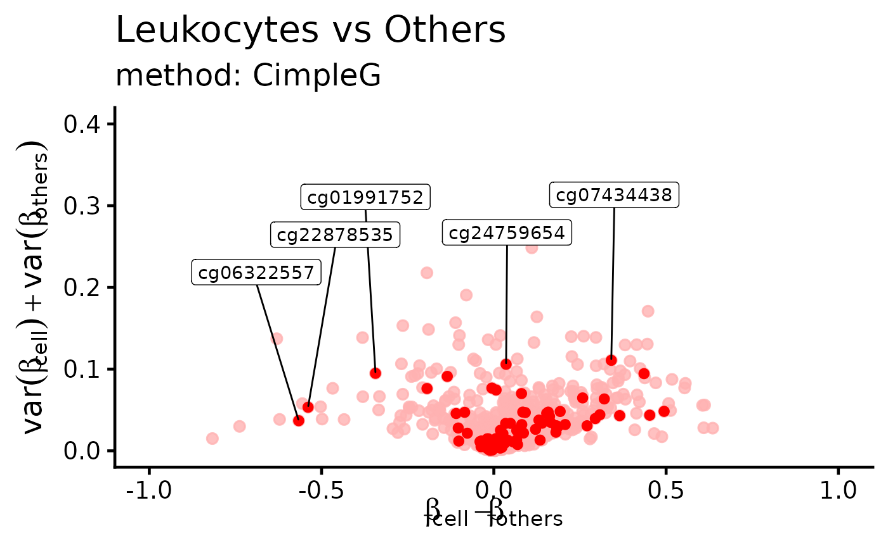

Represent CpGs in the difference in means, sum of variances space. This plot is often used to select CpGs that would be good classifiers. These CpGs are often located on the bottom left and bottom right of this plot.
Source:R/plot.R
dmsv_plot.RdRepresent CpGs in the difference in means, sum of variances space. This plot is often used to select CpGs that would be good classifiers. These CpGs are often located on the bottom left and bottom right of this plot.
Usage
dmsv_plot(
dat,
target_vector = NULL,
x_var = "diff_means",
y_var = "sum_variance",
id_var = "id",
highlight_var = NULL,
display_var = NULL,
label_var1 = "Target",
label_var2 = "Others",
point_color = "black",
subtitle = NULL
)Arguments
- dat
Data to create dmsv plot (difference in means, sum of variances plot). Either a data.frame with `x_var`,`y_var` and `id_var` or, if `target_vector` is not `NULL` a matrix with beta values from which, given the target, the difference in means between the target and others, and the sum of variances within the target and others will be calculated.
- target_vector
if not NULL a boolean vector with target class assignment, see data
- x_var
Name of the column with x-axis data (difference of means).
- y_var
Name of the column with y-axis data (sum of variances).
- id_var
Name of the column with the feature/CpG ID.
- highlight_var
(Optional) Name of the column with the highlighted features. Values in this column should be boolean (
TRUEfor selected,FALSEfor not selected).- display_var
(Optional) Name of the column with the features that should be displayed in the plot as a label. Values in this column should be boolean (
TRUEfor feature that should be displayed,FALSEfor feature that should not be displayed).- label_var1
Label of the target class. Default is
"Target".- label_var2
Label of the other classes. Default is
"Others".- point_color
Color of the features/CpGs in the plot. Default is
"black". If features are highlighted, non-highlighted features will have a lighter color.- subtitle
Subtitle to be displayed in the plot. Default is
NULL.
Examples
library("CimpleG")
# load CimpleG example data
data(train_data)
data(train_targets)
# make basic plot straight from the data
plt <- dmsv_plot(
dat = train_data,
target_vector = train_targets$blood_cells == 1
)
print(plt)
# make plot with highlighted features
# first create a diffmeans sumvar data frame from the data
df_dmeansvar <- compute_diffmeans_sumvar(
train_data,
target_vector = train_targets$blood_cells==1
)
# adding a column to this data frame \code{hl_col} with random CpGs
# selected (as TRUE) or not (as FALSE) to be highlighted and displayed.
df_dmeansvar$hl_col <- sample(c(TRUE,FALSE),nrow(df_dmeansvar),replace=TRUE,prob=c(0.1,0.9))
df_dmeansvar$dp_col <- df_dmeansvar$hl_col
plt <- dmsv_plot(
dat=df_dmeansvar,
highlight_var="hl_col",
display_var="dp_col",
label_var1="Leukocytes",
point_color="red",
subtitle="method: CimpleG"
)
print(plt)
#> Warning: ggrepel: 87 unlabeled data points (too many overlaps). Consider increasing max.overlaps
